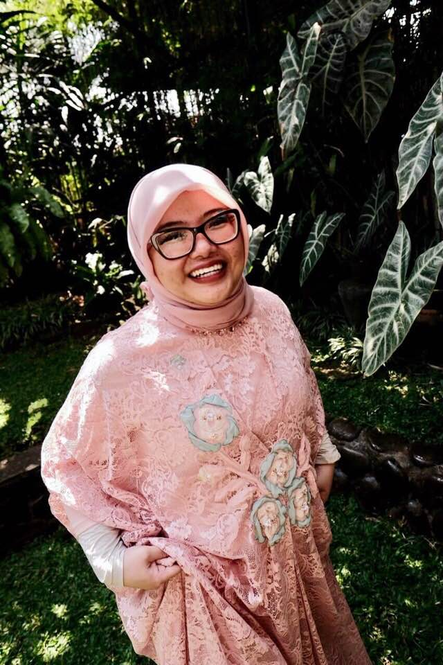

About Me
Annisa is a Visiting Assistant Professor of Interpersonal Communication at the University of Richmond by profession and an aspiring full-stack web developer by hobby.
Prior to completing her Doctor of Philosophy in Communication program from Wayne State University in Detroit, Michigan, Annisa had worked as a news reporter for The Jakarta Post and a feature writer for a lifestyle magazine in Amman, Jordan.
A Jakarta-transplant in RVA since August 2019, Annisa considers herself an avid globetrotter, gourmand, and polyglot, who is committed to cultivating empathetic communication and encouraging cultural understanding.